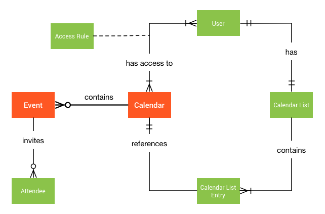
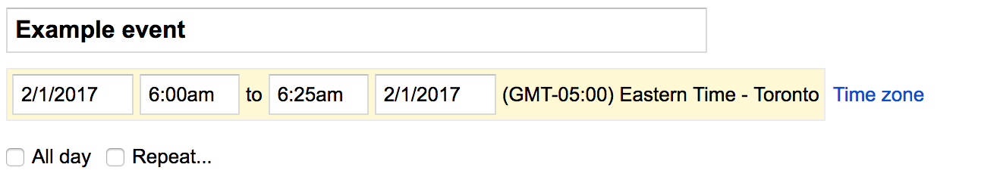

This guide describes calendars, events, and their relationship to each other.
Calendars
A calendar is a collection of related events, along with additional metadata such as summary, default time zone, and location. Each calendar is identified by an ID, which is an email address. Calendars can be shared with others. Primary calendars are owned by their associated user account; other calendars are owned by a single data owner.
Events
An event is an object associated with a specific date or time range. Events are identified by a unique ID. Besides a start and end date-time, events contain other data such as summary, description, location, status, reminders, and attachments.
Types of events
Google Calendar supports single and recurring events:
- A single event represents a unique occurrence.
- A recurring event defines multiple occurrences.
Events may also be timed or all-day:
- A timed event occurs between two specific points in time. Timed events
use the
start.dateTimeandend.dateTimefields to specify when they occur. - An all-day event spans an entire day or consecutive series of days. All-day
events use the
start.dateandend.datefields to specify when they occur. Note that the timezone field has no significance for all-day events.
Organizers
Events have a single organizer which is the calendar containing the main copy of the event. Events can also have multiple attendees. An attendee is usually the primary calendar of an invited user.
The following diagram shows the conceptual relationship between calendars, events, and other related elements:

Primary calendars and other calendars
A primary calendar is a special type of calendar associated with a single user account. This calendar is created automatically for each new user account and its ID usually matches the user's primary email address. As long as the account exists, its primary calendar can never be deleted or "un-owned" by the user. However, it can still be shared with other users.
In addition to the primary calendar, you can explicitly create any number of other calendars. These calendars can be modified, deleted, and shared with others. Such calendars have a single data owner with the highest privileges, including the exclusive right to delete the calendar. The data owner's access level cannot be downgraded. The data owner is initially determined as the user who created the calendar, however the data ownership can be transferred in the Google Calendar UI.
Calendar and calendar list
The Calendars collection represents all existing calendars. It can be used to create and delete calendars. You can also retrieve or set global properties shared across all users with access to a calendar. For example, a calendar's title and default time zone are global properties.
The CalendarList is a collection of all calendar entries that a user has added to their list (shown in the left panel of the web UI). You can use it to add and remove existing calendars to or from the user's list. You also use it to retrieve and set the values of user-specific calendar properties, such as default reminders. Another example is foreground color, since different users can have different colors set for the same calendar.
The following table compares the meaning of operations for the two collections:
| Operation | Calendars | CalendarList |
|---|---|---|
insert |
Creates a new secondary calendar. This calendar is also added to the creator's calendar list, and cannot be removed, unless the calendar is deleted or transferred. | Inserts an existing calendar into the user's list. |
delete |
Deletes a secondary calendar. | Removes a calendar from the user's list. |
get |
Retrieves calendar metadata, for example, title and time zone. | Retrieves metadata plus user-specific customization such as color or override reminders. |
patch/update |
Modifies calendar metadata. | Modifies user-specific calendar properties. |
Recurring events
Some events occur multiple times on a regular schedule, such as weekly meetings, birthdays, and holidays. Other than having different start and end times, these repeated events are often identical.
Events are called recurring if they repeat according to a defined schedule. Single events are non-recurring and happen only once.
Recurrence rule
The schedule for a recurring event is defined in two parts:
Its start and end fields (which define the first occurrence, as if this were just a stand-alone single event), and
Its recurrence field (which defines how the event should be repeated over time).
The recurrence field contains an array of strings representing one or several
RRULE, RDATE or EXDATE properties as defined in RFC
5545.
The RRULE property is the most important as it defines a regular rule for
repeating the event. It is composed of several components. Some of them are:
FREQ— The frequency with which the event should be repeated (such asDAILYorWEEKLY). Required.INTERVAL— Works together withFREQto specify how often the event should be repeated. For example,FREQ=DAILY;INTERVAL=2means once every two days.COUNT— Number of times this event should be repeated.UNTIL— The date or date-time until which the event should be repeated (inclusive).BYDAY— Days of the week on which the event should be repeated (SU,MO,TU, etc.). Other similar components includeBYMONTH,BYYEARDAY, andBYHOUR.
The RDATE property specifies additional dates or date-times when the event
occurrences should happen. For example, RDATE;VALUE=DATE:19970101,19970120.
Use this to add extra occurrences not covered by the RRULE.
The EXDATE property is similar to RDATE, but specifies dates or date-times
when the event should not happen. That is, those occurrences should be
excluded. This must point to a valid instance generated by the recurrence rule.
EXDATE and RDATE can have a time zone, and must be dates (not date-times)
for all-day events.
Each of the properties may occur within the recurrence field multiple times.
The recurrence is defined as the union of all RRULE and RDATE rules, minus the
ones excluded by all EXDATE rules.
Here are some examples of recurring events:
An event that happens from 6:00 AM to 7:00 AM every Tuesday and Friday starting from September 15, 2015 and stopping after the fifth occurrence on September 29, 2015:
... "start": { "dateTime": "2015-09-15T06:00:00+02:00", "timeZone": "Europe/Zurich" }, "end": { "dateTime": "2015-09-15T07:00:00+02:00", "timeZone": "Europe/Zurich" }, "recurrence": [ "RRULE:FREQ=WEEKLY;COUNT=5;BYDAY=TU,FR" ], ...An all-day event starting on June 1, 2015 and repeating every 3 days throughout the month, excluding June 10 but including June 9 and June 11:
... "start": { "date": "2015-06-01" }, "end": { "date": "2015-06-02" }, "recurrence": [ "EXDATE;VALUE=DATE:20150610", "RDATE;VALUE=DATE:20150609,20150611", "RRULE:FREQ=DAILY;UNTIL=20150628;INTERVAL=3" ], ...
Instances and exceptions
A recurring event consists of several instances: its particular occurrences at different times. These instances act as events themselves.
Recurring event modifications can either affect the whole recurring event (and all of its instances), or only individual instances. Instances that differ from their parent recurring event are called exceptions.
For example, an exception may have a different summary, a different start time,
or additional attendees invited only to that instance. You can also cancel an
instance altogether without removing the recurring event
(instance cancellations are reflected in the event
status).
For examples of how to work with recurring events and instances using the Google Calendar API, see Recurring events.
Time zones
A time zone specifies a region that observes a uniform standard time. In the Google Calendar API, you specify time zones using IANA time zone identifiers.
You can set the time zone for both calendars and events. The following sections describe the effects of these settings.
Calendar time zone
The time zone of the calendar is also known as the default time zone because of
its implications for query results. The calendar time zone affects the way
time values are interpreted or presented by the
events.get(),
events.list(), and
events.instances() methods.
- Query result time-zone conversion
- Results of the
get(),list(), andinstances()methods are returned in the time zone that you specify in thetimeZoneparameter. If you omit this parameter, then these methods all use the calendar time zone as the default. - Matching all-day events to time-bracketed queries
- The
list(), andinstances()methods let you specify start- and end-time filters, with the method returning instances that fall in the specified range. The calendar time zone is used to calculate start and end times of all-day events to determine whether they fall within the filter specification.
Event time zone
Event instances have a start and end time; the specification for these times may include the time zone. You can specify the time zone in several ways; the following all specify the same time:
- Include a time zone offset in the
dateTimefield, for example2017-01-25T09:00:00-0500. - Specify the time with no offset, for example
2017-01-25T09:00:00, leaving thetimeZonefield empty (this implicitly uses the default time zone). - Specify the time with no offset, for example
2017-01-25T09:00:00, but use thetimeZonefield to specify the time zone.
You can also specify event times in UTC if you prefer:
- Specify the time in UTC:
2017-01-25T14:00:00Zor use a zero offset2017-01-25T14:00:00+0000.
The internal representation of the event time is the same in all these cases,
but setting the timeZone field attaches a time zone to the event, just as
when you set an event time zone using the Calendar
UI:

Recurring event time zone
For recurring events, you must always specify a single time zone to expand the recurrences of the event.